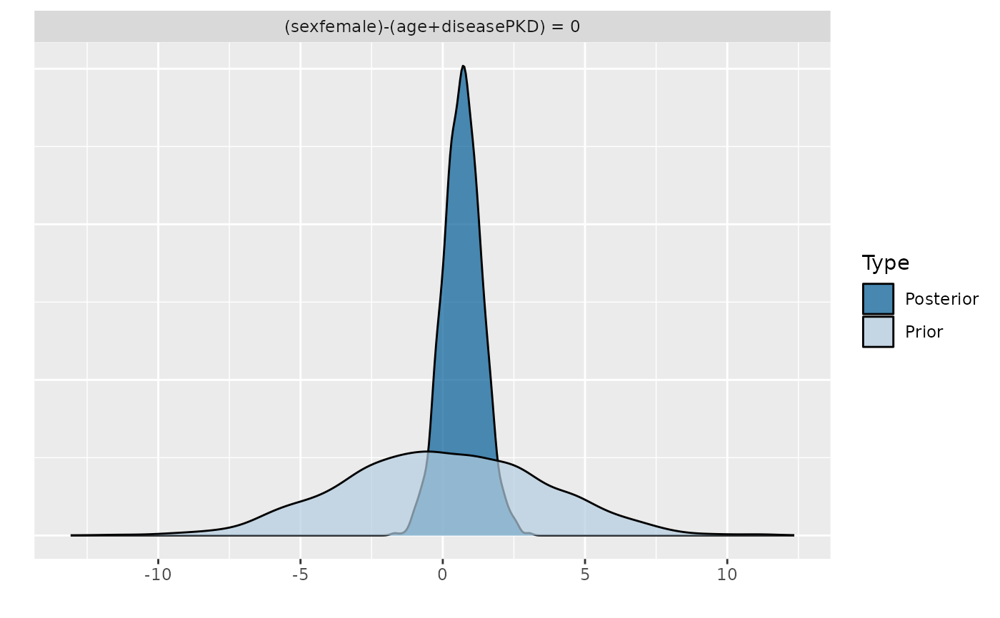
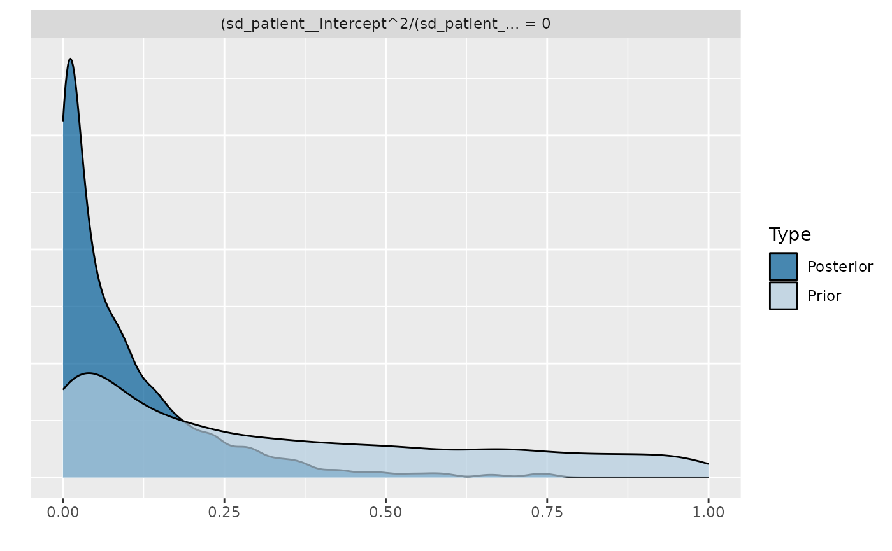
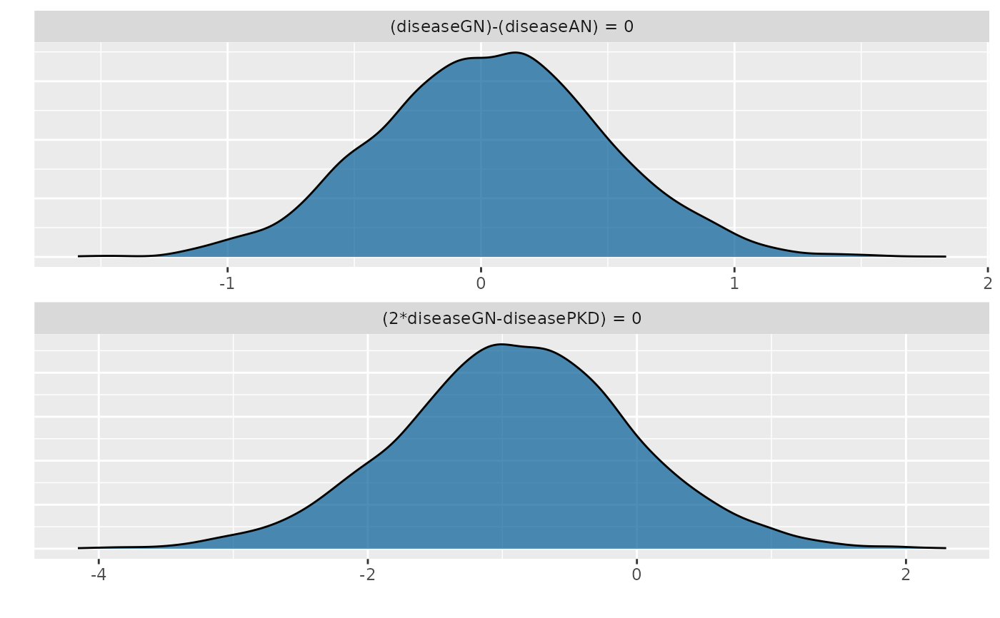

Perform non-linear hypothesis testing for all model parameters.
Usage
# S3 method for class 'brmsfit'
hypothesis(
x,
hypothesis,
class = "b",
group = "",
scope = c("standard", "ranef", "coef"),
alpha = 0.05,
robust = FALSE,
seed = NULL,
...
)
hypothesis(x, ...)
# Default S3 method
hypothesis(x, hypothesis, alpha = 0.05, robust = FALSE, ...)Arguments
- x
An
Robject. If it is nobrmsfitobject, it must be coercible to adata.frame. In the latter case, the variables used in thehypothesisargument need to correspond to column names ofx, while the rows are treated as representing posterior draws of the variables.- hypothesis
A character vector specifying one or more non-linear hypothesis concerning parameters of the model.
- class
A string specifying the class of parameters being tested. Default is "b" for population-level effects. Other typical options are "sd" or "cor". If
class = NULL, all parameters can be tested against each other, but have to be specified with their full name (see alsovariables)- group
Name of a grouping factor to evaluate only group-level effects parameters related to this grouping factor.
- scope
Indicates where to look for the variables specified in
hypothesis. If"standard", use the full parameter names (subject to the restriction given byclassandgroup). If"coef"or"ranef", compute the hypothesis for all levels of the grouping factor given in"group", based on the output ofcoef.brmsfitandranef.brmsfit, respectively.- alpha
The alpha-level of the tests (default is 0.05; see 'Details' for more information).
- robust
If
FALSE(the default) the mean is used as the measure of central tendency and the standard deviation as the measure of variability. IfTRUE, the median and the median absolute deviation (MAD) are applied instead.- seed
A single numeric value passed to
set.seedto make results reproducible. This is currently only relevant for point hypotheses that scope over at least two parameters (see Details).- ...
Currently ignored.
Value
A brmshypothesis object.
Details
Among others, hypothesis computes an evidence ratio
(Evid.Ratio) for each hypothesis. For a one-sided hypothesis, this
is just the posterior probability (Post.Prob) under the hypothesis
against its alternative. That is, when the hypothesis is of the form
a > b, the evidence ratio is the ratio of the posterior probability
of a > b and the posterior probability of a < b. In this
example, values greater than one indicate that the evidence in favor of
a > b is larger than evidence in favor of a < b. For a
two-sided (point) hypothesis, the evidence ratio is a Bayes factor between
the hypothesis and its alternative computed via the Savage-Dickey density
ratio method. That is the posterior density at the point of interest
divided by the prior density at that point. Values greater than one
indicate that evidence in favor of the point hypothesis has increased after
seeing the data. In order to calculate this Bayes factor, all parameters
related to the hypothesis must have proper priors and argument
sample_prior of function brm must be set to "yes".
Otherwise Evid.Ratio (and Post.Prob) will be NA.
Please note that the Savage-Dickey density ratio as implemented here provides
only a very basic test of point hypotheses. It is recommended that you use
bridge sampling instead (via bayes_factor which relies on the
bridgesampling package). When interpreting Bayes factors for point
hypotheses, make sure that your priors are reasonable and carefully chosen,
as the result will depend heavily on the priors. In particular, avoid using
default priors. Additionally, note that point hypotheses that scope over more
than one parameter (e.g., when testing equality between two parameters) involve
random sampling of the priors over those parameters (to accommodate the
the assumption that priors for different parameters are independent of each other).
This introduces an element of randomness into such hypothesis tests. Consider
repeating the test to assure results are sufficiently stable, and use the argument
seed for reproducibility. Finally, note that, for technical reasons, we
cannot sample from priors of certain parameters classes. Most notably, these include
overall intercept parameters (prior class "Intercept") as well as group-level
coefficients.
For one-sided hypotheses, the Evid.Ratio may sometimes be 0 or Inf implying very
small or large evidence, respectively, in favor of the tested hypothesis.
For one-sided hypotheses pairs, this basically means that all posterior
draws are on the same side of the value dividing the two hypotheses. In
that sense, instead of 0 or Inf, you may rather read it as
Evid.Ratio smaller 1 / S or greater S, respectively,
where S denotes the number of posterior draws used in the
computations.
The argument alpha specifies the size of the credible interval
(i.e., Bayesian confidence interval). For instance, if we tested a
two-sided hypothesis and set alpha = 0.05 (5%) an, the credible
interval will contain 1 - alpha = 0.95 (95%) of the posterior
values. Hence, alpha * 100% of the posterior values will
lie outside of the credible interval. Although this allows testing of
hypotheses in a similar manner as in the frequentist null-hypothesis
testing framework, we strongly argue against using arbitrary cutoffs (e.g.,
p < .05) to determine the 'existence' of an effect.
Examples
# \dontrun{
## define priors
prior <- c(set_prior("normal(0,2)", class = "b"),
set_prior("student_t(10,0,1)", class = "sigma"),
set_prior("student_t(10,0,1)", class = "sd"))
## fit a linear mixed effects models
fit <- brm(time ~ age + sex + disease + (1 + age|patient),
data = kidney, family = lognormal(),
prior = prior, sample_prior = "yes",
control = list(adapt_delta = 0.95))
#> Compiling Stan program...
#> Start sampling
#>
#> SAMPLING FOR MODEL 'anon_model' NOW (CHAIN 1).
#> Chain 1:
#> Chain 1: Gradient evaluation took 3.9e-05 seconds
#> Chain 1: 1000 transitions using 10 leapfrog steps per transition would take 0.39 seconds.
#> Chain 1: Adjust your expectations accordingly!
#> Chain 1:
#> Chain 1:
#> Chain 1: Iteration: 1 / 2000 [ 0%] (Warmup)
#> Chain 1: Iteration: 200 / 2000 [ 10%] (Warmup)
#> Chain 1: Iteration: 400 / 2000 [ 20%] (Warmup)
#> Chain 1: Iteration: 600 / 2000 [ 30%] (Warmup)
#> Chain 1: Iteration: 800 / 2000 [ 40%] (Warmup)
#> Chain 1: Iteration: 1000 / 2000 [ 50%] (Warmup)
#> Chain 1: Iteration: 1001 / 2000 [ 50%] (Sampling)
#> Chain 1: Iteration: 1200 / 2000 [ 60%] (Sampling)
#> Chain 1: Iteration: 1400 / 2000 [ 70%] (Sampling)
#> Chain 1: Iteration: 1600 / 2000 [ 80%] (Sampling)
#> Chain 1: Iteration: 1800 / 2000 [ 90%] (Sampling)
#> Chain 1: Iteration: 2000 / 2000 [100%] (Sampling)
#> Chain 1:
#> Chain 1: Elapsed Time: 1.636 seconds (Warm-up)
#> Chain 1: 0.637 seconds (Sampling)
#> Chain 1: 2.273 seconds (Total)
#> Chain 1:
#>
#> SAMPLING FOR MODEL 'anon_model' NOW (CHAIN 2).
#> Chain 2:
#> Chain 2: Gradient evaluation took 2.6e-05 seconds
#> Chain 2: 1000 transitions using 10 leapfrog steps per transition would take 0.26 seconds.
#> Chain 2: Adjust your expectations accordingly!
#> Chain 2:
#> Chain 2:
#> Chain 2: Iteration: 1 / 2000 [ 0%] (Warmup)
#> Chain 2: Iteration: 200 / 2000 [ 10%] (Warmup)
#> Chain 2: Iteration: 400 / 2000 [ 20%] (Warmup)
#> Chain 2: Iteration: 600 / 2000 [ 30%] (Warmup)
#> Chain 2: Iteration: 800 / 2000 [ 40%] (Warmup)
#> Chain 2: Iteration: 1000 / 2000 [ 50%] (Warmup)
#> Chain 2: Iteration: 1001 / 2000 [ 50%] (Sampling)
#> Chain 2: Iteration: 1200 / 2000 [ 60%] (Sampling)
#> Chain 2: Iteration: 1400 / 2000 [ 70%] (Sampling)
#> Chain 2: Iteration: 1600 / 2000 [ 80%] (Sampling)
#> Chain 2: Iteration: 1800 / 2000 [ 90%] (Sampling)
#> Chain 2: Iteration: 2000 / 2000 [100%] (Sampling)
#> Chain 2:
#> Chain 2: Elapsed Time: 1.61 seconds (Warm-up)
#> Chain 2: 0.626 seconds (Sampling)
#> Chain 2: 2.236 seconds (Total)
#> Chain 2:
#>
#> SAMPLING FOR MODEL 'anon_model' NOW (CHAIN 3).
#> Chain 3:
#> Chain 3: Gradient evaluation took 2.6e-05 seconds
#> Chain 3: 1000 transitions using 10 leapfrog steps per transition would take 0.26 seconds.
#> Chain 3: Adjust your expectations accordingly!
#> Chain 3:
#> Chain 3:
#> Chain 3: Iteration: 1 / 2000 [ 0%] (Warmup)
#> Chain 3: Iteration: 200 / 2000 [ 10%] (Warmup)
#> Chain 3: Iteration: 400 / 2000 [ 20%] (Warmup)
#> Chain 3: Iteration: 600 / 2000 [ 30%] (Warmup)
#> Chain 3: Iteration: 800 / 2000 [ 40%] (Warmup)
#> Chain 3: Iteration: 1000 / 2000 [ 50%] (Warmup)
#> Chain 3: Iteration: 1001 / 2000 [ 50%] (Sampling)
#> Chain 3: Iteration: 1200 / 2000 [ 60%] (Sampling)
#> Chain 3: Iteration: 1400 / 2000 [ 70%] (Sampling)
#> Chain 3: Iteration: 1600 / 2000 [ 80%] (Sampling)
#> Chain 3: Iteration: 1800 / 2000 [ 90%] (Sampling)
#> Chain 3: Iteration: 2000 / 2000 [100%] (Sampling)
#> Chain 3:
#> Chain 3: Elapsed Time: 1.449 seconds (Warm-up)
#> Chain 3: 0.642 seconds (Sampling)
#> Chain 3: 2.091 seconds (Total)
#> Chain 3:
#>
#> SAMPLING FOR MODEL 'anon_model' NOW (CHAIN 4).
#> Chain 4:
#> Chain 4: Gradient evaluation took 2.5e-05 seconds
#> Chain 4: 1000 transitions using 10 leapfrog steps per transition would take 0.25 seconds.
#> Chain 4: Adjust your expectations accordingly!
#> Chain 4:
#> Chain 4:
#> Chain 4: Iteration: 1 / 2000 [ 0%] (Warmup)
#> Chain 4: Iteration: 200 / 2000 [ 10%] (Warmup)
#> Chain 4: Iteration: 400 / 2000 [ 20%] (Warmup)
#> Chain 4: Iteration: 600 / 2000 [ 30%] (Warmup)
#> Chain 4: Iteration: 800 / 2000 [ 40%] (Warmup)
#> Chain 4: Iteration: 1000 / 2000 [ 50%] (Warmup)
#> Chain 4: Iteration: 1001 / 2000 [ 50%] (Sampling)
#> Chain 4: Iteration: 1200 / 2000 [ 60%] (Sampling)
#> Chain 4: Iteration: 1400 / 2000 [ 70%] (Sampling)
#> Chain 4: Iteration: 1600 / 2000 [ 80%] (Sampling)
#> Chain 4: Iteration: 1800 / 2000 [ 90%] (Sampling)
#> Chain 4: Iteration: 2000 / 2000 [100%] (Sampling)
#> Chain 4:
#> Chain 4: Elapsed Time: 1.422 seconds (Warm-up)
#> Chain 4: 0.783 seconds (Sampling)
#> Chain 4: 2.205 seconds (Total)
#> Chain 4:
#> Warning: There were 29 divergent transitions after warmup. See
#> https://mc-stan.org/misc/warnings.html#divergent-transitions-after-warmup
#> to find out why this is a problem and how to eliminate them.
#> Warning: Examine the pairs() plot to diagnose sampling problems
## perform two-sided hypothesis testing
(hyp1 <- hypothesis(fit, "sexfemale = age + diseasePKD"))
#> Hypothesis Tests for class b:
#> Hypothesis Estimate Est.Error CI.Lower CI.Upper Evid.Ratio
#> 1 (sexfemale)-(age+... = 0 0.69 0.67 -0.66 2.04 3.21
#> Post.Prob Star
#> 1 0.76
#> ---
#> 'CI': 90%-CI for one-sided and 95%-CI for two-sided hypotheses.
#> '*': For one-sided hypotheses, the posterior probability exceeds 95%;
#> for two-sided hypotheses, the value tested against lies outside the 95%-CI.
#> Posterior probabilities of point hypotheses assume equal prior probabilities.
plot(hyp1)

hypothesis(fit, "exp(age) - 3 = 0", alpha = 0.01)
#> Hypothesis Tests for class b:
#> Hypothesis Estimate Est.Error CI.Lower CI.Upper Evid.Ratio Post.Prob
#> 1 (exp(age)-3) = 0 -2.01 0.01 -2.04 -1.97 0 0
#> Star
#> 1 *
#> ---
#> 'CI': 98%-CI for one-sided and 99%-CI for two-sided hypotheses.
#> '*': For one-sided hypotheses, the posterior probability exceeds 99%;
#> for two-sided hypotheses, the value tested against lies outside the 99%-CI.
#> Posterior probabilities of point hypotheses assume equal prior probabilities.
## perform one-sided hypothesis testing
hypothesis(fit, "diseasePKD + diseaseGN - 3 < 0")
#> Hypothesis Tests for class b:
#> Hypothesis Estimate Est.Error CI.Lower CI.Upper Evid.Ratio
#> 1 (diseasePKD+disea... < 0 -2.82 0.93 -4.37 -1.32 665.67
#> Post.Prob Star
#> 1 1 *
#> ---
#> 'CI': 90%-CI for one-sided and 95%-CI for two-sided hypotheses.
#> '*': For one-sided hypotheses, the posterior probability exceeds 95%;
#> for two-sided hypotheses, the value tested against lies outside the 95%-CI.
#> Posterior probabilities of point hypotheses assume equal prior probabilities.
hypothesis(fit, "age < Intercept",
class = "sd", group = "patient")
#> Hypothesis Tests for class sd_patient:
#> Hypothesis Estimate Est.Error CI.Lower CI.Upper Evid.Ratio
#> 1 (age)-(Intercept) < 0 -0.34 0.28 -0.86 -0.02 77.43
#> Post.Prob Star
#> 1 0.99 *
#> ---
#> 'CI': 90%-CI for one-sided and 95%-CI for two-sided hypotheses.
#> '*': For one-sided hypotheses, the posterior probability exceeds 95%;
#> for two-sided hypotheses, the value tested against lies outside the 95%-CI.
#> Posterior probabilities of point hypotheses assume equal prior probabilities.
## test the amount of random intercept variance on all variance
h <- paste("sd_patient__Intercept^2 / (sd_patient__Intercept^2 +",
"sd_patient__age^2 + sigma^2) = 0")
(hyp2 <- hypothesis(fit, h, class = NULL))
#> Hypothesis Tests for class :
#> Hypothesis Estimate Est.Error CI.Lower CI.Upper Evid.Ratio
#> 1 (sd_patient__Inte... = 0 0.1 0.12 0 0.43 4.07
#> Post.Prob Star
#> 1 0.8 *
#> ---
#> 'CI': 90%-CI for one-sided and 95%-CI for two-sided hypotheses.
#> '*': For one-sided hypotheses, the posterior probability exceeds 95%;
#> for two-sided hypotheses, the value tested against lies outside the 95%-CI.
#> Posterior probabilities of point hypotheses assume equal prior probabilities.
plot(hyp2)

## test more than one hypothesis at once
h <- c("diseaseGN = diseaseAN", "2 * diseaseGN - diseasePKD = 0")
(hyp3 <- hypothesis(fit, h))
#> Hypothesis Tests for class b:
#> Hypothesis Estimate Est.Error CI.Lower CI.Upper Evid.Ratio
#> 1 (diseaseGN)-(dise... = 0 0.04 0.45 -0.85 0.92 5.96
#> 2 (2*diseaseGN-dise... = 0 -0.90 0.87 -2.66 0.82 3.09
#> Post.Prob Star
#> 1 0.86
#> 2 0.76
#> ---
#> 'CI': 90%-CI for one-sided and 95%-CI for two-sided hypotheses.
#> '*': For one-sided hypotheses, the posterior probability exceeds 95%;
#> for two-sided hypotheses, the value tested against lies outside the 95%-CI.
#> Posterior probabilities of point hypotheses assume equal prior probabilities.
plot(hyp3, ignore_prior = TRUE)

## compute hypotheses for all levels of a grouping factor
hypothesis(fit, "age = 0", scope = "coef", group = "patient")
#> Hypothesis Tests for class :
#> Group Hypothesis Estimate Est.Error CI.Lower CI.Upper Evid.Ratio Post.Prob
#> 1 1 (age) = 0 -0.01 0.02 -0.04 0.03 NA NA
#> 2 2 (age) = 0 -0.01 0.02 -0.04 0.02 NA NA
#> 3 3 (age) = 0 -0.01 0.02 -0.04 0.03 NA NA
#> 4 4 (age) = 0 0.00 0.02 -0.04 0.03 NA NA
#> 5 5 (age) = 0 -0.01 0.02 -0.04 0.03 NA NA
#> 6 6 (age) = 0 -0.01 0.02 -0.04 0.03 NA NA
#> 7 7 (age) = 0 -0.01 0.02 -0.04 0.02 NA NA
#> 8 8 (age) = 0 0.00 0.02 -0.03 0.03 NA NA
#> 9 9 (age) = 0 0.00 0.02 -0.03 0.03 NA NA
#> 10 10 (age) = 0 0.00 0.02 -0.03 0.03 NA NA
#> 11 11 (age) = 0 -0.01 0.02 -0.04 0.03 NA NA
#> 12 12 (age) = 0 -0.01 0.02 -0.04 0.03 NA NA
#> 13 13 (age) = 0 -0.01 0.02 -0.04 0.03 NA NA
#> 14 14 (age) = 0 0.00 0.02 -0.04 0.03 NA NA
#> 15 15 (age) = 0 -0.01 0.02 -0.04 0.02 NA NA
#> 16 16 (age) = 0 -0.01 0.02 -0.04 0.02 NA NA
#> 17 17 (age) = 0 0.00 0.02 -0.03 0.03 NA NA
#> 18 18 (age) = 0 0.00 0.02 -0.04 0.03 NA NA
#> 19 19 (age) = 0 -0.01 0.02 -0.04 0.02 NA NA
#> 20 20 (age) = 0 -0.01 0.02 -0.04 0.03 NA NA
#> 21 21 (age) = 0 0.00 0.02 -0.03 0.04 NA NA
#> 22 22 (age) = 0 -0.01 0.02 -0.04 0.03 NA NA
#> 23 23 (age) = 0 -0.01 0.02 -0.04 0.02 NA NA
#> 24 24 (age) = 0 -0.01 0.02 -0.04 0.03 NA NA
#> 25 25 (age) = 0 -0.01 0.02 -0.04 0.03 NA NA
#> 26 26 (age) = 0 0.00 0.02 -0.03 0.03 NA NA
#> 27 27 (age) = 0 -0.01 0.02 -0.04 0.03 NA NA
#> 28 28 (age) = 0 -0.01 0.02 -0.04 0.02 NA NA
#> 29 29 (age) = 0 -0.01 0.02 -0.04 0.02 NA NA
#> 30 30 (age) = 0 -0.01 0.02 -0.04 0.03 NA NA
#> 31 31 (age) = 0 -0.01 0.02 -0.04 0.02 NA NA
#> 32 32 (age) = 0 -0.01 0.02 -0.05 0.02 NA NA
#> 33 33 (age) = 0 -0.01 0.02 -0.04 0.02 NA NA
#> 34 34 (age) = 0 -0.01 0.02 -0.04 0.03 NA NA
#> 35 35 (age) = 0 -0.01 0.02 -0.04 0.03 NA NA
#> 36 36 (age) = 0 -0.01 0.02 -0.04 0.03 NA NA
#> 37 37 (age) = 0 -0.01 0.02 -0.05 0.02 NA NA
#> 38 38 (age) = 0 -0.01 0.02 -0.04 0.02 NA NA
#> Star
#> 1
#> 2
#> 3
#> 4
#> 5
#> 6
#> 7
#> 8
#> 9
#> 10
#> 11
#> 12
#> 13
#> 14
#> 15
#> 16
#> 17
#> 18
#> 19
#> 20
#> 21
#> 22
#> 23
#> 24
#> 25
#> 26
#> 27
#> 28
#> 29
#> 30
#> 31
#> 32
#> 33
#> 34
#> 35
#> 36
#> 37
#> 38
#> ---
#> 'CI': 90%-CI for one-sided and 95%-CI for two-sided hypotheses.
#> '*': For one-sided hypotheses, the posterior probability exceeds 95%;
#> for two-sided hypotheses, the value tested against lies outside the 95%-CI.
#> Posterior probabilities of point hypotheses assume equal prior probabilities.
## use the default method
dat <- as.data.frame(fit)
str(dat)
#> 'data.frame': 4000 obs. of 94 variables:
#> $ b_Intercept : num 3.37 3.18 3.66 2.62 3.32 ...
#> $ b_age : num 0.00953 0.00907 -0.01192 0.01511 0.01235 ...
#> $ b_sexfemale : num 0.929 0.739 1.164 0.867 1.394 ...
#> $ b_diseaseGN : num -0.936 -0.636 -0.396 -0.154 -1.05 ...
#> $ b_diseaseAN : num -1.017 -0.589 -0.287 -0.566 -1.519 ...
#> $ b_diseasePKD : num 0.8293 -0.0663 2.0212 -0.2523 -0.3115 ...
#> $ sd_patient__Intercept : num 0.42 0.364 0.023 0.148 0.127 ...
#> $ sd_patient__age : num 0.00377 0.00426 0.00456 0.00296 0.00131 ...
#> $ cor_patient__Intercept__age: num -1 0.998 0.737 0.411 0.964 ...
#> $ sigma : num 1.05 1.51 1.15 1.48 1.18 ...
#> $ Intercept : num 4.02 3.78 4.02 3.68 4.12 ...
#> $ r_patient[1,Intercept] : num 0.45998 -0.35802 0.00613 -0.10055 -0.25246 ...
#> $ r_patient[2,Intercept] : num 0.266055 -0.3044 -0.026631 -0.000344 -0.113202 ...
#> $ r_patient[3,Intercept] : num 0.1297 -0.02809 -0.00796 0.00641 -0.10301 ...
#> $ r_patient[4,Intercept] : num -0.341 0.779 -0.036 0.373 0.228 ...
#> $ r_patient[5,Intercept] : num 0.5156 -0.4173 0.0234 -0.1547 0.1964 ...
#> $ r_patient[6,Intercept] : num -0.8517 0.4257 -0.0225 0.1185 -0.3495 ...
#> $ r_patient[7,Intercept] : num -0.22608 0.26192 -0.02011 0.00276 -0.17148 ...
#> $ r_patient[8,Intercept] : num -0.4619 0.5711 -0.0217 0.2101 0.0574 ...
#> $ r_patient[9,Intercept] : num 0.1194 0.31876 -0.00555 0.1308 -0.23442 ...
#> $ r_patient[10,Intercept] : num 0.29715 0.01245 0.00527 0.05578 0.01414 ...
#> $ r_patient[11,Intercept] : num 0.04135 0.10865 0.00879 -0.05949 -0.0193 ...
#> $ r_patient[12,Intercept] : num 0.12948 -0.04073 -0.00209 -0.06594 0.04912 ...
#> $ r_patient[13,Intercept] : num -0.1181 0.2637 -0.0194 0.0365 0.0648 ...
#> $ r_patient[14,Intercept] : num 0.4059 -0.3706 0.0378 -0.1189 0.032 ...
#> $ r_patient[15,Intercept] : num -0.4445 0.4296 -0.0183 0.1223 0.2479 ...
#> $ r_patient[16,Intercept] : num -0.0742 0.1651 -0.0134 -0.0393 -0.0673 ...
#> $ r_patient[17,Intercept] : num 0.2148 -0.0189 0.0407 -0.0612 -0.044 ...
#> $ r_patient[18,Intercept] : num 0.07629 0.27119 0.00218 0.06565 -0.11905 ...
#> $ r_patient[19,Intercept] : num -1.1247 0.984 -0.0695 0.3805 -0.171 ...
#> $ r_patient[20,Intercept] : num -0.5633 0.3387 -0.0276 0.0723 -0.0224 ...
#> $ r_patient[21,Intercept] : num 0.05174 1.06148 -0.00324 0.3877 -0.26799 ...
#> $ r_patient[22,Intercept] : num -0.1127 0.11564 0.00114 0.01978 0.0856 ...
#> $ r_patient[23,Intercept] : num 0.517 -0.4217 0.0117 -0.121 -0.0586 ...
#> $ r_patient[24,Intercept] : num -0.3372 0.2954 -0.0233 0.0719 0.0944 ...
#> $ r_patient[25,Intercept] : num 0.407186 -0.064484 -0.000692 -0.006056 -0.158983 ...
#> $ r_patient[26,Intercept] : num 0.3583 -0.3947 0.0434 -0.1512 0.0626 ...
#> $ r_patient[27,Intercept] : num 0.41974 -0.04224 0.0098 0.01036 -0.00574 ...
#> $ r_patient[28,Intercept] : num -0.2283 0.0449 -0.0169 0.0392 0.0929 ...
#> $ r_patient[29,Intercept] : num -0.0536 -0.1027 -0.042 0.0929 -0.0899 ...
#> $ r_patient[30,Intercept] : num -0.247 -0.0621 0.00509 -0.05456 -0.18174 ...
#> $ r_patient[31,Intercept] : num -0.1023 0.18541 -0.00956 0.03622 0.00253 ...
#> $ r_patient[32,Intercept] : num -0.3742 0.1587 -0.0661 0.2002 -0.0686 ...
#> $ r_patient[33,Intercept] : num -0.13729 0.40464 -0.00716 0.15747 -0.08099 ...
#> $ r_patient[34,Intercept] : num -0.3009 0.1046 -0.024 0.0275 -0.1376 ...
#> $ r_patient[35,Intercept] : num 0.19646 -0.07846 -0.00173 -0.11756 -0.13422 ...
#> $ r_patient[36,Intercept] : num -0.7453 0.4846 -0.0332 0.0876 -0.2585 ...
#> $ r_patient[37,Intercept] : num -0.7911 0.6384 -0.0343 0.0963 -0.104 ...
#> $ r_patient[38,Intercept] : num -0.1402 -0.0214 0.0232 -0.0637 0.1655 ...
#> $ r_patient[1,age] : num -0.004076 -0.004235 0.000837 -0.001652 -0.00307 ...
#> $ r_patient[2,age] : num -0.00236 -0.00369 -0.00315 -0.00166 -0.00105 ...
#> $ r_patient[3,age] : num -1.27e-03 -8.73e-05 -4.79e-03 4.19e-03 -1.36e-03 ...
#> $ r_patient[4,age] : num 0.003152 0.008982 -0.001809 0.000688 0.002806 ...
#> $ r_patient[5,age] : num -0.00457 -0.005 0.00487 -0.00181 0.002 ...
#> $ r_patient[6,age] : num 0.007622 0.004943 -0.00271 0.000947 -0.003112 ...
#> $ r_patient[7,age] : num 0.00208 0.00294 -0.00161 -0.00364 -0.00203 ...
#> $ r_patient[8,age] : num 0.004275 0.006746 -0.002314 0.000191 0.000514 ...
#> $ r_patient[9,age] : num -0.001054 0.003717 0.001026 0.000877 -0.002258 ...
#> $ r_patient[10,age] : num -0.002607 0.00024 0.001149 0.000167 0.000528 ...
#> $ r_patient[11,age] : num -0.000411 0.001429 -0.001168 0.00115 0.000213 ...
#> $ r_patient[12,age] : num -0.00103 -0.000686 0.001652 -0.002305 0.00052 ...
#> $ r_patient[13,age] : num 0.001056 0.003068 -0.00318 0.001324 0.000413 ...
#> $ r_patient[14,age] : num -0.003723 -0.004229 0.004673 -0.000311 0.000696 ...
#> $ r_patient[15,age] : num 0.004002 0.005109 -0.00341 0.000787 0.001978 ...
#> $ r_patient[16,age] : num 0.000632 0.002092 -0.004055 0.001227 -0.000775 ...
#> $ r_patient[17,age] : num -0.001786 -0.000599 0.011306 -0.003983 -0.000267 ...
#> $ r_patient[18,age] : num -0.000675 0.00324 0.000663 0.002446 -0.001062 ...
#> $ r_patient[19,age] : num 0.01021 0.0112 -0.00554 -0.00173 -0.00177 ...
#> $ r_patient[20,age] : num 0.005074 0.003926 -0.002702 0.000355 -0.000234 ...
#> $ r_patient[21,age] : num -4.31e-04 1.25e-02 -3.93e-05 4.56e-03 -2.02e-03 ...
#> $ r_patient[22,age] : num 0.001091 0.000984 0.005345 -0.004354 0.001169 ...
#> $ r_patient[23,age] : num -4.63e-03 -4.96e-03 1.11e-03 6.57e-05 -7.11e-04 ...
#> $ r_patient[24,age] : num 0.003019 0.003461 -0.003161 0.001291 0.000447 ...
#> $ r_patient[25,age] : num -0.003635 -0.000749 0.000334 0.000947 -0.0011 ...
#> $ r_patient[26,age] : num -0.003379 -0.004145 0.002756 0.004771 0.000303 ...
#> $ r_patient[27,age] : num -0.003816 -0.000386 0.000943 -0.00321 0.000233 ...
#> $ r_patient[28,age] : num 0.002113 0.000401 -0.001106 -0.000279 0.000661 ...
#> $ r_patient[29,age] : num 0.00054 -0.00135 -0.006389 -0.000268 -0.001279 ...
#> $ r_patient[30,age] : num 0.002266 -0.000791 0.000973 0.001221 -0.001795 ...
#> $ r_patient[31,age] : num 8.52e-04 2.29e-03 -2.72e-03 -6.53e-05 1.48e-05 ...
#> $ r_patient[32,age] : num 0.003435 0.001484 -0.007251 -0.000944 -0.000605 ...
#> $ r_patient[33,age] : num 0.001262 0.004613 0.000169 -0.000374 -0.001043 ...
#> $ r_patient[34,age] : num 0.002705 0.001095 -0.003631 -0.000853 -0.001408 ...
#> $ r_patient[35,age] : num -0.001781 -0.000871 -0.000484 0.000565 -0.001559 ...
#> $ r_patient[36,age] : num 0.00666 0.0057 -0.0057 0.00144 -0.00248 ...
#> $ r_patient[37,age] : num 7.32e-03 6.93e-03 -1.28e-05 -2.45e-03 -1.25e-03 ...
#> $ r_patient[38,age] : num 0.001363 -0.000469 0.005243 -0.002329 0.00227 ...
#> $ prior_Intercept : num 6.75 6.55 7.46 4.67 4.27 ...
#> $ prior_b : num -0.883 2.043 0.502 2.335 0.595 ...
#> $ prior_sigma : num 0.68 0.948 0.294 1.552 2.131 ...
#> $ prior_sd_patient : num 3.671 0.669 2.199 0.139 1.476 ...
#> $ prior_cor_patient : num -0.2025 -0.9174 -0.8487 0.7461 0.0814 ...
#> $ lprior : num -12.5 -12.8 -12.8 -12.7 -12.8 ...
#> $ lp__ : num -549 -548 -548 -537 -555 ...
hypothesis(dat, "b_age > 0")
#> Hypothesis Tests for class :
#> Hypothesis Estimate Est.Error CI.Lower CI.Upper Evid.Ratio Post.Prob Star
#> 1 (b_age) > 0 -0.01 0.01 -0.03 0.02 0.46 0.32
#> ---
#> 'CI': 90%-CI for one-sided and 95%-CI for two-sided hypotheses.
#> '*': For one-sided hypotheses, the posterior probability exceeds 95%;
#> for two-sided hypotheses, the value tested against lies outside the 95%-CI.
#> Posterior probabilities of point hypotheses assume equal prior probabilities.
# }